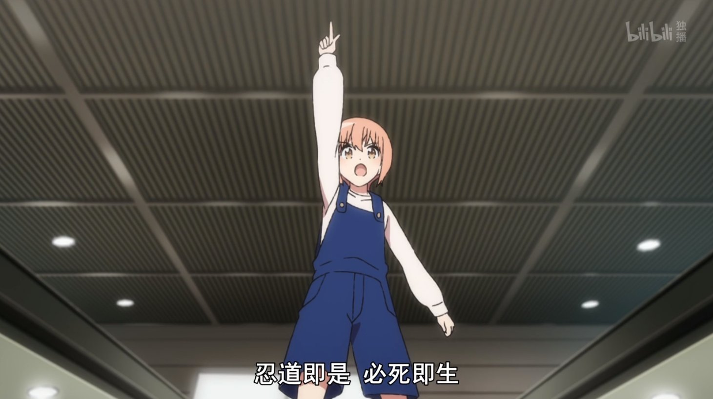

「四月」两个字就会让人想到春天。不是新冠疫情的话大概会去西雅图看樱花吧——希望明年能去。
这两个月为各种各样的事情奔波忙碌，虽然每件单独拿出来都不是特别麻烦，但放在一起就很考验人multithreading和one-pass processing的能力。上个月的月记就是在这钟心态下鸽的。
面试
提过的两尊boss其实是Snapchat和Facebook，结果是Snapchat失败，Facebook通过。关于面试之前的博客里总结得差不多了，算法和系统设计都不会太难，重要的是交流——直接的behavior question，间接的答技术题时反应和最后问面试官问题——通过交流展现自己拥有对方寻求的素质，面试的本质是一种推销。
到此为止年度面试之旅算是告一段落。收到的offer相比现在工资涨幅不大，加上最近的EB2/EB3进度很快，就先在Google继续干下去吧。有点遗憾的是疫情期间大家都是远程面试，不能实地参观各公司，顺便蹭顿饭搞点贴纸之类的纪念品，反而被迫试用了一堆聊天软件。
买房 & 后续
经历大量实地看房、读disclosures和出offer失败后充分理解了湾区房市的雷场本质，以及不离开湾区就要学会与之共存的事实。当时机缘巧合，一栋我原本出offer失败的房子获胜买家退出，于是我确认了担心的噪音问题后买下了。四月搞定贷款完成过户，因为是PUD产权的老townhouse，算是在宇宙中心有了一块小小的土地。
整体来说，买房过程还是挺顺利的——当我调整预期后，一度失去的房子又给了我购买机会；另一方面，遇到的buyer agent，loan officer甚至seller都是比较好的人。可以阴暗地想买房过程中这些人的利益相同，但buyer agent和loan officer半夜弄文档确保timeline，seller不声不响地把房检报告里的问题都修了（房产交易没规定买卖哪方负责修）也是事实。有朋友经常吐槽美国是agent社会，但agent确实为你省却了繁琐的工作，甚至抵挡了很多负面情绪——事情是多面的，我们可以选择去看哪些面。
买房后主要是做两件事情：一是装修，本着装修是无底洞凑合万事兴的心态，最大的工程是把卧室的地毯换成了laminate地板；二是出租，找完租客后因为网上没有比较好的合同模板，于是自己整理了一份，5月我和租客会先后搬过去泉氏酒店，堂堂开业。当然之后还有搬家、装空调、院子地漏等等事情要操心，homeowner算不算一份副业呢？
工作
之前的项目被砍后经过几个月的低迷和心不在焉（面试+买房），手上的新项目开始步入正规，这两周偶尔半夜发代码还被经理在1:1中关心有没有overload。嘛，也不是workaholic，只是「再出发」的感觉让人有些兴奋。
PERF的结果没什么意外是CME，毕竟promo后马上得EE以上rating是很难的，跟经理表示that's expected后笑对画饼。其实去年promo时的感慨之一是生活的礼物还是在准备好接受的时候收到比较好，早一个cycle升级的话恐怕要狂到被锤。不管领诺许诺多快能升到next level，peer如何在无谓工作上内卷，自己的侧重点还是应该放在达成Senior Software Engineer的能力——"focus on growth, not promo"。
总之，手上的项目量大管饱，夏天还要带intern，经理和peer的反馈也都很正面，把合理的时间精力投入工作吧。
ACG
最近没什么心思读书，虽然零零散散地读着，但只看完了一本《猎药师》。新开的《美国反对美国》读了几章，想读英文的东西换换脑子，于是又暂停了。人觉得疲劳的时候就想看番——大概跟去年夏天一周看完钢炼的状态差不多。
进击的巨人
多年前看到莱纳和贝尔托特叛变时觉得太扯了就没看下去，得知139话结局烂尾网上骂声一片后，作为资深烂片爱好者必然要补啊，于是在工作最忙的一周把几季的剧情补完了。说实话骂得狠的人是期待太高，到地鸣发动就没什么余地了，不要在漫画中寻找世界和平的解决方案啊。
撇开结局不谈，故事还是有很多高光点的，特别是几段自白——尤弥尔（104期）在星空下恢复成人类，贝尔托特飞上高空变身，旁观者基斯转述卡露拉的话，配上音乐很震撼。
体操武士
本着随便看看的心态点开的番，没想到是意外惊喜。剧情简单地讲，曾经辉煌的体操老将城（JO）太郎因伤病和长期赛绩不佳被规劝退役，但和女儿小玲旅游时邂逅忍者莱欧，最后时刻决定按自己的想法「再坚持一下」。复出过程算是王道燃向剧情，接受身体状态下降的现实改变表演风格，意识到他人对自己支撑，转而也去支撑他人，同自己的过去和解。莱欧一直鼓励城太郎则是因为小时候被城太郎的体操震撼——剧情中段我就在吐槽新警察故事了。
朴素的故事（城太郎最后超越自己是从空中转体三圈加到四圈）里有很多值得体味的东西——前浪怎样中年危机，可能失败也要去竞争的勇气，重视家人和朋友，加上可爱的小玲和搞笑的吉祥物BB，是部适合在消沉时看的片子。

其它
- 最近开始每两周去做一次正骨（chiropractic），保险报销后每次$40。骨骼和肌肉状态有多大改善不清楚（本身症状不算严重），但之前有大腿根部酸的问题，正骨以及按建议改善坐姿后，确实没怎么犯了。
- 4月下旬去打了第一针Pfizer疫苗，症状只是左臂酸痛了几天。看一亩三分地里似乎第二针的反应挺剧烈，和医生聊起后他推荐提前一周开始吃维生素C和D3，不过给的剂量似乎是推荐剂量的10倍
致死量。 - 新家卧室可以用现在的家具，书房得新买。在Amazon上买了桌子办公椅书架寄过来自己装——$65/件的assembly service太迷了。网购家具都附赠工具，流程也不复杂，最惨的经历是装竹制鞋柜时手指被刨得不够光的板子扎了几根竹刺。干手工活还是应该搞副厚手套。
- 打通了多娜多娜，年轻人的第一部黄油。
- 带着没玩过Minecraft的朋友入门，以前只玩过生存模式，转到创造模式后试了铁路、水电梯之类需要大量材料的玩法。
- 为了改善坐姿搞了显示器和键盘（之前直接用笔记本，肩膀是向内紧绷的状态），
给自己放纵的理由买了一青一红两个机械键盘，写文章时青轴的打字机感确实愉快。